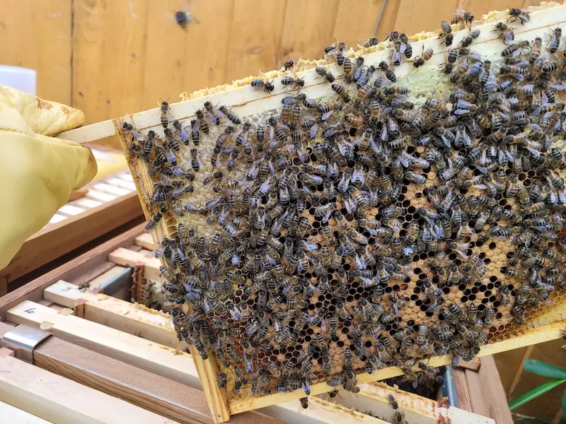

Bacterial Diseases of Honey Bees – AFB & EFB in the UK
Last updated: 1 May 2026

Bacterial diseases are among the most serious threats to honey bee colonies. In the UK, the two main bacterial brood diseases are American foulbrood (AFB) and European foulbrood (EFB). Both are notifiable diseases, which means that if you suspect them you must follow current UK guidance and involve a bee inspector.
This page is designed to be a practical reference for UK beekeepers. It does not replace official advice, but it should help you understand what foulbrood looks like, why it is taken so seriously, and how everyday management and good hygiene can reduce the risk of an outbreak in your apiary. If you are comparing suspicious brood signs, see Foulbrood vs Chalkbrood. If you are unsure whether the issue needs official advice, see When to Call a Bee Inspector. For the wider context, start with the bee diseases and pests overview. If you are starting from suspicious brood symptoms and are not yet sure whether foulbrood is the issue, try the interactive colony health triage tool and the Bee Health Checker.
Veterinary medicine records: If you use any authorised veterinary medicines in your hives (including some treatments used as part of wider disease management), keep clear notes of what was used, when, and which colonies were treated. In the UK, it is good practice to retain these records for at least 5 years. See: Veterinary Medicine Records.
Use this guide alongside the main bee diseases overview, the colony health triage tool, the Bee Health Checker, the detailed varroa management notes and the hive hygiene guide to build a joined-up approach to bee health.
What Are Bacterial Diseases of Honey Bees?
In simple terms, a bacterial disease occurs when harmful bacteria infect the brood. The best-known examples in honey bees are:
- American foulbrood (AFB) – caused by Paenibacillus larvae, which forms long-lived spores that can survive for decades in comb and equipment.
- European foulbrood (EFB) – caused mainly by Melissococcus plutonius, which multiplies in the gut of young larvae and competes with them for food.
Both AFB and EFB affect the brood rather than adult bees. That means you are most likely to spot problems when you examine brood frames carefully during routine inspections. Learning what healthy brood looks like is just as important as learning the classic signs of disease. These checks matter especially during spring brood checks in April and early summer brood checks in June.
In the UK, foulbrood control is organised nationally. Bee inspectors have legal powers to inspect colonies, diagnose disease and oversee control measures. As a beekeeper, your role is to:
- Inspect colonies regularly and calmly.
- Notice when brood looks unusual or smells wrong.
- Ask for help early if you are worried – do not move frames or equipment around "to see what happens". If you are still trying to work out whether the signs really point to foulbrood, use the colony health triage tool or Bee Health Checker first.
American Foulbrood (AFB)
American foulbrood is a high-impact disease because of the way the bacteria form spores. These spores are incredibly tough, survive for many years and can spread easily on comb, equipment and honey. For that reason, AFB is usually controlled by destroying infected colonies and contaminated equipment under official supervision.
Typical Signs of AFB
No single sign proves AFB on its own, but a combination should ring alarm bells. If you are comparing foulbrood with other possible brood issues, check the Bee Health Checker as well as the wider bee diseases hub. Look for:
- Patchy brood pattern – lots of empty cells scattered among capped brood, where larvae have died and been removed.
- Sunken or dark cappings – cappings may look greasy, perforated or slightly "melted".
- Gluey or fishy smell – not always present, but often mentioned in classic descriptions.
- Larval remains stuck to the cell wall – instead of a neat, pearly white larva, you may see brown, gluey remains.
Traditional texts describe the "matchstick" or "roping" test: inserting a matchstick or small twig into the remains of a dead larva and slowly drawing it out. In AFB, the larval remains often stretch out in a brown string several centimetres long. This can be a useful indicator, but it is not a substitute for proper diagnosis.
Diagnosis and What Happens Next
In the UK, suspected AFB is notifiable. If you suspect AFB:
- Do not move frames, super boxes or bees from the suspect hive to any others.
- Keep the entrance reduced to minimise robbing and drifting bees.
- Contact your local bee inspector or the National Bee Unit via BeeBase (National Bee Unit) and follow their instructions.
An inspector may take samples or use field test kits to confirm the disease. If AFB is confirmed, control measures usually involve burning infected comb and heavily contaminated equipment, and dealing with the colony under official guidance. This can be emotionally difficult, but it protects the wider beekeeping community.
European Foulbrood (EFB)
European foulbrood is also notifiable, but its biology is slightly different. The bacteria primarily infect unsealed larvae and compete for food in the gut. Many larvae die before the cell is capped, which is why EFB can give the brood nest a very patchy appearance.
Typical Signs of EFB
Again, no single sign proves EFB, but common features include:
- Twisted or misplaced larvae – instead of lying neatly in the base of the cell, infected larvae may lie at odd angles or against the wall.
- Discoloured larvae – instead of pearly white, larvae may appear yellowish, grey or translucent.
- Patchy brood pattern – many cells empty where larvae have died and been removed before capping.
- Rubbery or granular remains – dried larval remains may look rubbery or like small scales at the bottom of the cell.
EFB does not usually produce the same strong smell or roping test as AFB, although some colonies may have a sour odour. The signs can also overlap with starvation, chilled brood or other stress. That is why experienced diagnosis is essential. If the brood looks "off" but you are not sure why, compare what you are seeing with the Bee Health Checker, the colony health triage tool and normal early-summer brood patterns in June.
Control and Management Options
In the UK, EFB management is carried out under inspector guidance. Depending on the level of infection and local policy, options may include:
- Destruction of heavily infected colonies and comb where necessary.
- Shook swarm procedures – shaking bees onto clean foundation and destroying old comb, under controlled conditions.
- Follow-up inspections to confirm the disease has not re-appeared.
You should not attempt home treatments or informal use of antibiotics. This risks creating resistant bacteria and is not compatible with current UK control policies.
How AFB and EFB Spread Between Colonies
Understanding how foulbrood spreads helps you avoid common mistakes. Bacterial spores and infected material can move between colonies through:
- Shared or second-hand equipment – brood boxes, frames, foundation and tools that have not been properly cleaned or scorched.
- Feeding infected honey or syrup – using honey of unknown origin, especially from colonies with a history of disease.
- Robbing and drifting – bees moving between hives or robbing out weak, diseased colonies and then returning home.
- Beekeeper actions – moving suspect frames between colonies, wiping tools on clothing and re-using contaminated gloves.
Good record-keeping makes a big difference. Note where each hive sits, when you move it and any history of poor brood patterns or disease investigation. That way, if a problem is found, inspectors can quickly identify linked colonies. It also supports better inspection and hive management and strengthens the everyday habits covered in the hive hygiene guide.
Practical Hive Hygiene and Equipment Handling
Day-to-day hygiene does not have to be complicated or expensive. Many of the best practices are simple habits you repeat every time you visit the apiary. See the dedicated hive hygiene guide for more detail, and use it alongside the wider bee diseases overview – some key points are:
- Dedicated tools for suspect hives – if a colony looks odd, use a separate hive tool and gloves for that inspection and clean them thoroughly afterwards.
- Clean or scorch equipment – scorching boxes with a blowlamp or using appropriate cleaning methods for tools helps reduce contamination. Always follow safety guidance.
- Avoid unknown second-hand comb – frames and comb of uncertain origin can import problems into an otherwise healthy apiary.
- Keep feeding tidy – avoid spilling syrup or honey, which encourages robbing and increases the chance of disease spread.
These habits do not guarantee you will never see foulbrood, but they tilt the odds in your favour and make it easier for inspectors to contain any outbreak quickly if one does occur.
Working with Bee Inspectors and BeeBase
UK foulbrood control is a partnership between beekeepers and government agencies. Registering your apiaries on BeeBase helps inspectors contact you if there is disease in your area and provides access to up-to-date guidance. If you are unsure whether your symptoms need official advice, read When to Call a Bee Inspector.
If a bee inspector visits your apiary, it is an opportunity to learn. They can also help you improve the brood checks that matter most in April and June. They can:
- Show you the difference between healthy and suspect brood.
- Explain current control options and legal requirements.
- Help you think about apiary layout, hygiene and record-keeping.
Remember that their aim is to protect bees at a local and national level, not to criticise responsible beekeepers who ask for help early.
When in Doubt – What to Do Next
Many new beekeepers worry that every slightly patchy brood frame means foulbrood. In reality, colonies experience a range of minor setbacks – chilled brood, nutritional stress, queen changes – that can temporarily make brood patterns look messy. If you want help narrowing down those possibilities before assuming the worst, use the colony health triage tool and the Bee Health Checker.
The key is to combine:
- Regular inspections with good notes and photos where helpful.
- Calm comparison between hives in the same apiary – if one colony looks very different, ask why.
- Willingness to seek advice from your mentor, local association or bee inspector when something really does not look right.
Used alongside the broader bee diseases overview, the colony health triage tool, the Bee Health Checker, the hive hygiene guide, viral diseases guide and other conditions page, this foulbrood summary should give you a clearer picture of where bacterial diseases sit in the bigger story of bee health. It also fits naturally with spring brood checks in April and early-summer brood checks in June.
Bacterial Diseases – Frequently Asked Questions
Yes. Both American foulbrood (AFB) and European foulbrood (EFB) are notifiable diseases in the UK. If you suspect either, you should follow current guidance and contact your local bee inspector or the National Bee Unit through BeeBase. Do not move bees, comb or equipment until you have clear advice.
Typical signs of AFB include irregular, patchy brood with sunken, dark or greasy-looking cappings; a strong gluey or fishy smell; and larval remains that may rope out when tested with a matchstick. Confirmed diagnosis and control must follow current UK guidance and usually involve destruction of infected comb and equipment.
EFB often shows as twisted or discoloured larvae lying in their cells, sometimes yellowish or grey rather than pearly white. The brood pattern becomes patchy, with empty cells where larvae have died or been removed. EFB is managed under official guidance and may involve shook-swarm operations or destruction of heavily infected colonies.
No. In the UK, you must not self-treat suspected foulbrood with antibiotics. Control is carried out under official direction, usually by or in consultation with a bee inspector. This protects wider bee populations and helps prevent resistant bacterial strains from developing.
Yes. If you use authorised veterinary medicines in your hives, keep a clear log of the product used, the dates of treatment and which colonies were treated. In the UK, it is good practice to retain these records for at least 5 years.
Good hive hygiene, regular inspections and sensible handling of comb and equipment are key. Avoid feeding unknown honey to bees, minimise robbing, keep clear records of hive movements, and clean or scorch second-hand or suspect equipment. Work alongside local associations, bee inspectors and official resources such as BeeBase.